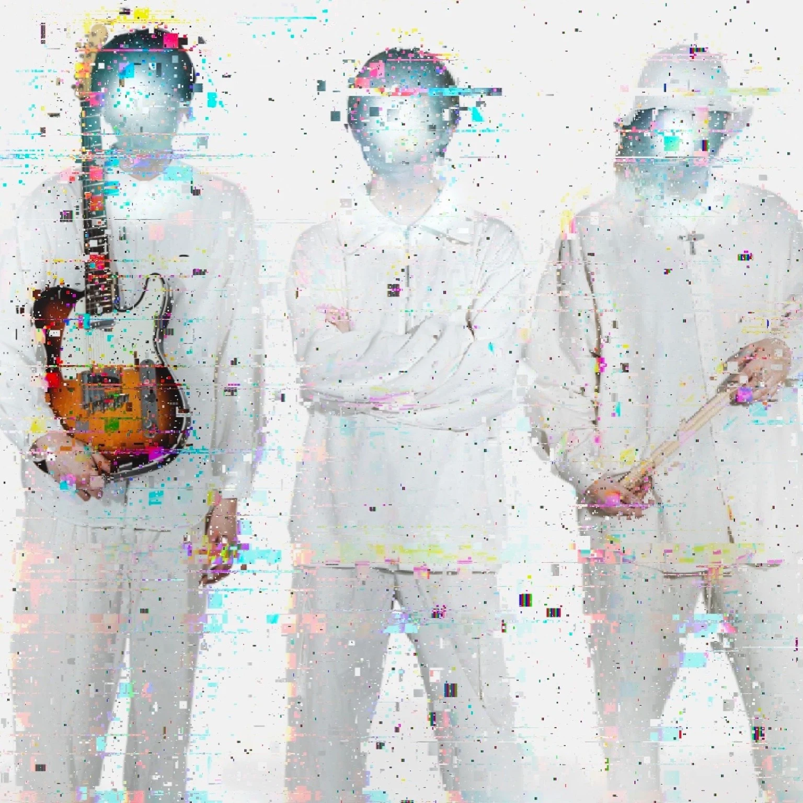

TOKYO POP ROCK BANDWHITE SPACE. COLORFUL SOUND.

shiLo
SOUND ON YOUR EVERYDAY.HELLO, WE ARE shiLo.
日常に、
おしゃぽっぷなBGMを。
01 / PRESS PLAY
MUSIC.
今の気分に、shiLoを。
02 / SEE YOU THERE
LIVE.
WE ARE shiLo.
03 / NICE TO MEET YOU
ABOUT.
白からはじまる、
僕らの音楽。
Tokyo pop rock band「shiLo（しろ）」。
真っ白なキャンバスに、
おしゃポップでロックな楽曲を描く。
おしゃぽっぷなBGM
04 / KEEP IN TOUCH
LET’S
CONNECT↗
ライブのお知らせも、日々のことも。
shiLoの最新情報はこちらから。